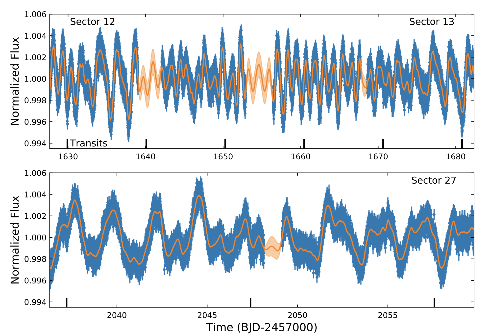
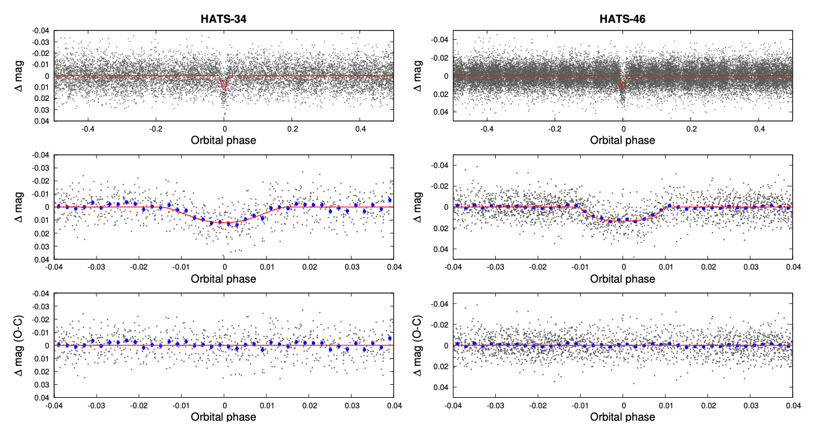

Hello and welcome TESS followers to this weeks news bulletin! This week we present three papers from the archive, enjoy!
TESS Hunt for Young and Maturing Exoplanets (THYME) V: A Sub-Neptune Transiting a Young Star in a Newly Discovered 250 Myr Association (Tofflemire et. al., 2021):
By studying and characterizing young planetary systems we can gain an insight into the processes which shape them. This paper presents the discovery of a sub-Neptune sized planet which orbit the young, late F dwarf type star (M = 1.2 Msun) HD 110082 (TOI-1098). This host star also has a low-mass, M dwarf binary companion (M = 0.26 Msun), which is separated by ~1’.
The planet was detected via transit events during TESS Cycle 1, and were validated with time-series photometry from Spitzer. Additional confirmation of the planetary nature, and characterization of the host, came from high-contrast imaging and high-resolution optical spectra.
HD 110082 is a young star with a rapid rotation, and after further analysis by the authors the star is found to reside in a new young stellar association designated MELANGE-1, with an age of 250(+50/-70) Myr.
Utilizing both the TESS and Spitzer light curves, the authors measured the orbital period of the planet as 10.18 days with a radius of 3.2 REarth.
Precise transit and radial-velocity characterization of a resonant pair: a warm Jupiter TOI-216c and eccentric warm Neptune TOI-216b (Dawson et. al., 20211):
TESS data were used to discover a pair of large, warm, exoplanets around TOI-216. The planets have a 2:1 resonance, and both exhibit timing variations. By precisely measuring the mass, radii, orbital properties, and resonant behavior of the planets the authors can test how such planets form in close orbits to their hosts.
A pervious analysis which used six sectors of TESS data, suffered from a degeneracy between the planet mass and orbital eccentricity. Using radial velocity measurements from HARPS, FEROS, and PFS the authors have now broken this degeneracy. An expanded transit timing variation baseline from TESS and ground-based facilities, have also increased the precision of the mass and eccentricity measurements.
TOI-216c is a warm Jupiter, and TOI-216b is an eccentric warm Neptune. The two planets possess a 2:1 resonance with a moderate libration amplitude of 60 +/- 2 degrees. See the paper for more information about this fascinating system.
HATS-34b and HATS-46b: Re-characterisation Using TESS and Gaia (Louden et. al., 2021)
A revised characterization of the previously discovered transiting planet systems HATS-34 and HATS-46 is presented. Using TESS data in combination with high-precision parallax and absolute photometry measurements from the ESA Gaia mission, the authors determine more accurate masses and radii of the planets and host stars.
Using an isochrone based fit for HATS-34 the authors measure a revised host star mass of 0.952 Ms and radius of 0.9381 Rs. The mass of the planet was then calculated as 0.951 MJ, with a radius of 1.282 RJ.
For HATS-46 the authors measured a mass of 0.869s, and a radius of 0.894 s. For the planet they obtained a mass of 0.158 MJ, and 0.951 RJ.

Fig 1. Taken from Tofflemire et. Al., (2021). TESS light curve of HD 110082. Sectors 12 and 13 are presented in the top panel, with Sector 27 in the bottom panel. Flux- normalized, 2m cadence flux measurements are presented as blue points. A Gaussian-process model for the stellar variability is presented in orange. Transits are labeled with vertical ticks along the x-axes.

Fig 2. HATSouth Light Curves of HATS-34 (left) and HATS-46 (right). In each case the top panel shows the full light curve, the middle panel is zoomed in to show the transit in greater detail, and the bottom panel shows the residuals from the best-fit model. The solid line represents the model and the dark filled circles on the lower panels show the light curves binned in phase with a bin size of 0.002.